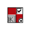

|  |
GUI Builder User Guide |
|
|
- NAME
- listbox - Create and manipulate listbox widgets
- SYNOPSIS
- listbox pathName ?options?
- STANDARD OPTIONS
- -background or -bg,
background, Background
- -borderwidth or -bd,
borderWidth, BorderWidth
- -cursor, cursor, Cursor
- -disabledforeground,
disabledForeground, DisabledForeground
- -exportselection,
exportSelection, ExportSelection
- -font, font, Font
- -foreground or -fg,
foreground, Foreground
- -highlightbackground,
highlightBackground, HighlightBackground
- -highlightcolor,
highlightColor, HighlightColor
- -highlightthickness,
highlightThickness, HighlightThickness
- -relief, relief, Relief
- -selectbackground,
selectBackground, Foreground
- -selectborderwidth,
selectBorderWidth, BorderWidth
- -selectforeground,
selectForeground, Background
- -setgrid, setGrid,
SetGrid
- -takefocus, takeFocus,
TakeFocus
- -xscrollcommand,
xScrollCommand, ScrollCommand
- -yscrollcommand,
yScrollCommand, ScrollCommand
- WIDGET-SPECIFIC
OPTIONS
- -activestyle,
activeStyle, ActiveStyle
- -height, height,
Height
- -listvariable,
listVariable, Variable
- -selectmode, selectMode,
SelectMode
- -state, state,
State
- -width, width,
Width
- DESCRIPTION
- INDICES
- number
- active
- anchor
- end
- @x,y
- WIDGET COMMAND
- pathName
activate index
- pathName
bbox index
- pathName
cget option
- pathName
configure ?option? ?value option value
...?
- pathName
curselection
- pathName
delete first ?last?
- pathName
get first ?last?
- pathName
index index
- pathName
insert index ?element element ...?
- pathName
itemcget index option
- pathName
itemconfigure index ?option? ?value?
?option value ...?
- -background
color
- -foreground
color
- -selectbackground
color
- -selectforeground
color
- pathName
nearest y
- pathName
scan option args
- pathName scan
mark x y
- pathName scan
dragto x y.
- pathName
see index
- pathName
selection option arg
- pathName
selection anchor index
- pathName
selection clear first ?last?
- pathName
selection includes index
- pathName
selection set first ?last?
- pathName
size
- pathName
xview args
- pathName
xview
- pathName
xview index
- pathName xview
moveto fraction
- pathName xview
scroll number what
- pathName
yview ?args?
- pathName
yview
- pathName
yview index
- pathName yview
moveto fraction
- pathName yview
scroll number what
- DEFAULT BINDINGS
listbox - Create and manipulate listbox widgets
listbox pathName ?options?
- -background or -bg,
background, Background
- -borderwidth or -bd,
borderWidth, BorderWidth
- -cursor, cursor,
Cursor
- -disabledforeground,
disabledForeground, DisabledForeground
- -exportselection,
exportSelection, ExportSelection
- -font, font, Font
- -foreground or -fg,
foreground, Foreground
- -highlightbackground,
highlightBackground, HighlightBackground
- -highlightcolor,
highlightColor, HighlightColor
- -highlightthickness,
highlightThickness, HighlightThickness
- -relief, relief,
Relief
- -selectbackground,
selectBackground, Foreground
- -selectborderwidth,
selectBorderWidth, BorderWidth
- -selectforeground,
selectForeground, Background
- -setgrid, setGrid,
SetGrid
- -takefocus, takeFocus,
TakeFocus
- -xscrollcommand,
xScrollCommand, ScrollCommand
- -yscrollcommand,
yScrollCommand, ScrollCommand
- Command-Line Name: -activestyle
- Database Name: activeStyle
- Database Class: ActiveStyle
- Specifies the style in which to draw the active element. This
must be one of dotbox (show a focus ring around the active
element), none (nospecial indication of active element) or
underline (underline the active element). The default is
underline.
- Command-Line Name: -height
- Database Name: height
- Database Class: Height
- Specifies the desired height for the window, in lines. If zero
or less, then the desired height for the window is made just large
enough to hold all the elements in the listbox.
- Command-Line Name: -listvariable
- Database Name: listVariable
- Database Class: Variable
- Specifies the name of a variable. The value of the variable is
a list to be displayed inside the widget; if the variable value
changes then the widget will automatically update itself to reflect
the new value. Attempts to assign a variable with an invalid list
value to -listvariable will cause an error. Attempts to
unset a variable in use as a -listvariable will fail but
will not generate an error.
- Command-Line Name: -selectmode
- Database Name: selectMode
- Database Class: SelectMode
- Specifies one of several styles for manipulating the selection.
The value of the option may be arbitrary, but the default bindings
expect it to be either single, browse,
multiple, or extended; the default value is
browse.
- Command-Line Name: -state
- Database Name: state
- Database Class: State
- Specifies one of two states for the listbox: normal or
disabled. If the listbox is disabled then items may not be
inserted or deleted, items are drawn in the
-disabledforeground color, and selection cannot be modified
and is not shown (though selection information is retained).
- Command-Line Name: -width
- Database Name: width
- Database Class: Width
- Specifies the desired width for the window in characters. If
the font doesn't have a uniform width then the width of the
character ``0'' is used in translating from character units to
screen units. If zero or less, then the desired width for the
window is made just large enough to hold all the elements in the
listbox.
The listbox command creates a new window (given by the
pathName argument) and makes it into a listbox widget.
Additional options, described above, may be specified on the
command line or in the option database to configure aspects of the
listbox such as its colors, font, text, and relief. The
listbox command returns its pathName argument. At the
time this command is invoked, there must not exist a window named
pathName, but pathName's parent must exist.
A listbox is a widget that displays a list of strings, one per
line. When first created, a new listbox has no elements. Elements
may be added or deleted using widget commands described below. In
addition, one or more elements may be selected as described below.
If a listbox is exporting its selection (see exportSelection
option), then it will observe the standard X11 protocols for
handling the selection. Listbox selections are available as type
STRING; the value of the
selection will be the text of the selected elements, with newlines
separating the elements.
It is not necessary for all the elements to be displayed in the
listbox window at once; commands described below may be used to
change the view in the window. Listboxes allow scrolling in both
directions using the standard xScrollCommand and
yScrollCommand options. They also support scanning, as
described below.
Many of the widget commands for listboxes take one or more
indices as arguments. An index specifies a particular element of
the listbox, in any of the following ways:
- number
- Specifies the element as a numerical index, where 0 corresponds
to the first element in the listbox.
- active
- Indicates the element that has the location cursor. This
element will be displayed as specified by -activestyle when
the listbox has the keyboard focus, and it is specified with the
activate widget command.
- anchor
- Indicates the anchor point for the selection, which is set with
the Tk selection anchor widget command.
- end
- Indicates the end of the listbox. For most commands this refers
to the last element in the listbox, but for a few commands such as
index and insert it refers to the element just after
the last one.
- @x,y
- Indicates the element that covers the point in the listbox
window specified by x and y (in pixel coordinates).
If no element covers that point, then the closest element to that
point is used.
In the widget command descriptions below, arguments named
index, first, and last always contain text
indices in one of the above forms.
The listbox command creates a new Tcl command whose name
is pathName. This command may be used to invoke various
operations on the widget. It has the following general form:
pathName option ?arg arg ...?
Option and the args determine the exact behavior
of the command. The following commands are possible for listbox
widgets:
- pathName activate
index
- Sets the active element to the one indicated by index.
If index is outside the range of elements in the listbox
then the closest element is activated. The active element is drawn
as specified by -activestyle when the widget has the input
focus, and its index may be retrieved with the index
active.
- pathName bbox index
- Returns a list of four numbers describing the bounding box of
the text in the element given by index. The first two
elements of the list give the x and y coordinates of the upper-left
corner of the screen area covered by the text (specified in pixels
relative to the widget) and the last two elements give the width
and height of the area, in pixels. If no part of the element given
by index is visible on the screen, or if index refers
to a non-existent element, then the result is an empty string; if
the element is partially visible, the result gives the full area of
the element, including any parts that are not visible.
- pathName cget
option
- Returns the current value of the configuration option given by
option. Option may have any of the values accepted by
the listbox command.
- pathName configure ?option?
?value option value ...?
- Query or modify the configuration options of the widget. If no
option is specified, returns a list describing all of the
available options for pathName (see Tk_ConfigureInfo in the
Tk language reference for information
on the format of this list). If option is specified with no
value, then the command returns a list describing the one
named option (this list will be identical to the corresponding
sublist of the value returned if no option is specified). If
one or more option-value pairs are specified, then the
command modifies the given widget option(s) to have the given
value(s); in this case the command returns an empty string.
Option may have any of the values accepted by the
listbox command.
- pathName curselection
- Returns a list containing the numerical indices of all of the
elements in the listbox that are currently selected. If there are
no elements selected in the listbox then an empty string is
returned.
- pathName delete first
?last?
- Deletes one or more elements of the listbox. First and
last are indices specifying the first and last elements in
the range to delete. If last isn't specified it defaults to
first, i.e. a single element is deleted.
- pathName get first
?last?
- If last is omitted, returns the contents of the listbox
element indicated by first, or an empty string if
first refers to a non-existent element. If last is
specified, the command returns a list whose elements are all of the
listbox elements between first and last, inclusive.
Both first and last may have any of the standard
forms for indices.
- pathName index
index
- Returns the integer index value that corresponds to
index. If index is end the return value is a
count of the number of elements in the listbox (not the index of
the last element).
- pathName insert index
?element element ...?
- Inserts zero or more new elements in the list just before the
element given by index. If index is specified as
end then the new elements are added to the end of the list.
Returns an empty string.
- pathName itemcget index
option
- Returns the current value of the item configuration option
given by option. Option may have any of the values
accepted by the listbox itemconfigure command.
- pathName itemconfigure index
?option? ?value? ?option value ...?
- Query or modify the configuration options of an item in the
listbox. If no option is specified, returns a list
describing all of the available options for the item (see
Tk_ConfigureInfo in the Tk language reference for
information on the format of this list). If option is
specified with no value, then the command returns a list
describing the one named option (this list will be identical to the
corresponding sublist of the value returned if no option is
specified). If one or more option-value pairs are specified,
then the command modifies the given widget option(s) to have the
given value(s); in this case the command returns an empty string.
The following options are currently supported for items:
- -background color
- Color specifies the background color to use when
displaying the item. It may have any of the forms accepted by the
Tk_GetColor command.
- -foreground color
- Color specifies the foreground color to use when
displaying the item. It may have any of the forms accepted by the
Tk_GetColor command.
- -selectbackground color
- color specifies the background color to use when
displaying the item while it is selected. It may have any of the
forms accepted by the Tk_GetColor command.
- -selectforeground color
- color specifies the foreground color to use when
displaying the item while it is selected. It may have any of the
forms accepted by the Tk_GetColor command.
- pathName nearest y
- Given a y-coordinate within the listbox window, this command
returns the index of the (visible) listbox element nearest to that
y-coordinate.
- pathName scan option
args
- This command is used to implement scanning on listboxes. It has
two forms, depending on option:
- pathName scan mark x
y
- Records x and y and the current view in the
listbox window; used in conjunction with later scan dragto
commands. Typically this command is associated with a mouse button
press in the widget. It returns an empty string.
- pathName scan dragto x
y.
- This command computes the difference between its x and
y arguments and the x and y arguments to the
last scan mark command for the widget. It then adjusts the
view by 10 times the difference in coordinates. This command is
typically associated with mouse motion events in the widget, to
produce the effect of dragging the list at high speed through the
window. The return value is an empty string.
- pathName see index
- Adjust the view in the listbox so that the element given by
index is visible. If the element is already visible then the
command has no effect; if the element is near one edge of the
window then the listbox scrolls to bring the element into view at
the edge; otherwise the listbox scrolls to center the element.
- pathName selection option
arg
- This command is used to adjust the selection within a listbox.
It has several forms, depending on option:
- pathName selection anchor
index
- Sets the selection anchor to the element given by index.
If index refers to a non-existent element, then the closest
element is used. The selection anchor is the end of the selection
that is fixed while dragging out a selection with the mouse. The
index anchor may be used to refer to the anchor
element.
- pathName selection clear
first ?last?
- If any of the elements between first and last
(inclusive) are selected, they are deselected. The selection state
is not changed for elements outside this range.
- pathName selection includes
index
- Returns 1 if the element indicated by index is currently
selected, 0 if it isn't.
- pathName selection set first
?last?
- Selects all of the elements in the range between first
and last, inclusive, without affecting the selection state
of elements outside that range.
- pathName size
- Returns a decimal string indicating the total number of
elements in the listbox.
- pathName xview args
- This command is used to query and change the horizontal
position of the information in the widget's window. It can take any
of the following forms:
- pathName xview
- Returns a list containing two elements. Each element is a real
fraction between 0 and 1; together they describe the horizontal
span that is visible in the window. For example, if the first
element is .2 and the second element is .6, 20% of the listbox's
text is off-screen to the left, the middle 40% is visible in the
window, and 40% of the text is off-screen to the right. These are
the same values passed to scrollbars via the -xscrollcommand
option.
- pathName xview
index
- Adjusts the view in the window so that the character position
given by index is displayed at the left edge of the window.
Character positions are defined by the width of the character
0.
- pathName xview moveto
fraction
- Adjusts the view in the window so that fraction of the
total width of the listbox text is off-screen to the left.
fraction must be a fraction between 0 and 1.
- pathName xview scroll number
what
- This command shifts the view in the window left or right
according to number and what. Number must be
an integer. What must be either units or pages
or an abbreviation of one of these. If what is units,
the view adjusts left or right by number character units
(the width of the 0 character) on the display; if it is
pages then the view adjusts by number screenfuls. If
number is negative then characters farther to the left
become visible; if it is positive then characters farther to the
right become visible.
- pathName yview
?args?
- This command is used to query and change the vertical position
of the text in the widget's window. It can take any of the
following forms:
- pathName yview
- Returns a list containing two elements, both of which are real
fractions between 0 and 1. The first element gives the position of
the listbox element at the top of the window, relative to the
listbox as a whole (0.5 means it is halfway through the listbox,
for example). The second element gives the position of the listbox
element just after the last one in the window, relative to the
listbox as a whole. These are the same values passed to scrollbars
via the -yscrollcommand option.
- pathName yview
index
- Adjusts the view in the window so that the element given by
index is displayed at the top of the window.
- pathName yview moveto
fraction
- Adjusts the view in the window so that the element given by
fraction appears at the top of the window. Fraction
is a fraction between 0 and 1; 0 indicates the first element in the
listbox, 0.33 indicates the element one-third the way through the
listbox, and so on.
- pathName yview scroll number
what
- This command adjusts the view in the window up or down
according to number and what. Number must be
an integer. What must be either units or
pages. If what is units, the view adjusts up
or down by number lines; if it is pages then the view
adjusts by number screenfuls. If number is negative
then earlier elements become visible; if it is positive then later
elements become visible.
Tk automatically creates class bindings for listboxes that give
them Motif-like behavior. Much of the behavior of a listbox is
determined by its selectMode option, which selects one of
four ways of dealing with the selection.
If the selection mode is single or browse, at most
one element can be selected in the listbox at once. In both modes,
clicking button 1 on an element selects it and deselects any other
selected item. In browse mode it is also possible to drag
the selection with button 1.
If the selection mode is multiple or extended, any
number of elements may be selected at once, including discontiguous
ranges. In multiple mode, clicking button 1 on an element
toggles its selection state without affecting any other elements.
In extended mode, pressing button 1 on an element selects
it, deselects everything else, and sets the anchor to the element
under the mouse; dragging the mouse with button 1 down extends the
selection to include all the elements between the anchor and the
element under the mouse, inclusive.
Most people will probably want to use browse mode for
single selections and extended mode for multiple selections;
the other modes appear to be useful only in special situations.
Any time the selection changes in the listbox, the virtual event
<<ListboxSelect>> will be generated. It is
easiest to bind to this event to be made aware of any changes to
listbox selection.
In addition to the above behavior, the following additional
behavior is defined by the default bindings:
- [1]
- In extended mode, the selected range can be adjusted by
pressing button 1 with the Shift key down: this modifies the
selection to consist of the elements between the anchor and the
element under the mouse, inclusive. The un-anchored end of this new
selection can also be dragged with the button down.
- [2]
- In extended mode, pressing button 1 with the Control key
down starts a toggle operation: the anchor is set to the element
under the mouse, and its selection state is reversed. The selection
state of other elements isn't changed. If the mouse is dragged with
button 1 down, then the selection state of all elements between the
anchor and the element under the mouse is set to match that of the
anchor element; the selection state of all other elements remains
what it was before the toggle operation began.
- [3]
- If the mouse leaves the listbox window with button 1 down, the
window scrolls away from the mouse, making information visible that
used to be off-screen on the side of the mouse. The scrolling
continues until the mouse re-enters the window, the button is
released, or the end of the listbox is reached.
- [4]
- Mouse button 2 may be used for scanning. If it is pressed and
dragged over the listbox, the contents of the listbox drag at high
speed in the direction the mouse moves.
- [5]
- If the Up or Down key is pressed, the location cursor (active
element) moves up or down one element. If the selection mode is
browse or extended then the new active element is
also selected and all other elements are deselected. In
extended mode the new active element becomes the selection
anchor.
- [6]
- In extended mode, Shift-Up and Shift-Down move the
location cursor (active element) up or down one element and also
extend the selection to that element in a fashion similar to
dragging with mouse button 1.
- [7]
- The Left and Right keys scroll the listbox view left and right
by the width of the character 0. Control-Left and
Control-Right scroll the listbox view left and right by the width
of the window. Control-Prior and Control-Next also scroll left and
right by the width of the window.
- [8]
- The Prior and Next keys scroll the listbox view up and down by
one page (the height of the window).
- [9]
- The Home and End keys scroll the listbox horizontally to the
left and right edges, respectively.
- [10]
- Control-Home sets the location cursor to the the first element
in the listbox, selects that element, and deselects everything else
in the listbox.
- [11]
- Control-End sets the location cursor to the the last element in
the listbox, selects that element, and deselects everything else in
the listbox.
- [12]
- In extended mode, Control-Shift-Home extends the
selection to the first element in the listbox and Control-Shift-End
extends the selection to the last element.
- [13]
- In multiple mode, Control-Shift-Home moves the location
cursor to the first element in the listbox and Control-Shift-End
moves the location cursor to the last element.
- [14]
- The space and Select keys make a selection at the location
cursor (active element) just as if mouse button 1 had been pressed
over this element.
- [15]
- In extended mode, Control-Shift-space and Shift-Select
extend the selection to the active element just as if button 1 had
been pressed with the Shift key down.
- [16]
- In extended mode, the Escape key cancels the most recent
selection and restores all the elements in the selected range to
their previous selection state.
- [17]
- Control-slash selects everything in the widget, except in
single and browse modes, in which case it selects the
active element and deselects everything else.
- [18]
- Control-backslash deselects everything in the widget, except in
browse mode where it has no effect.
- [19]
- The F16 key (labelled Copy on many Sun workstations) or Meta-w
copies the selection in the widget to the clipboard, if there is a
selection.
The behavior of listboxes can be changed by defining new
bindings for individual widgets or by redefining the class
bindings.
Copyright © 1990 The Regents of the University of California.
Copyright © 1994-1997 Sun Microsystems, Inc.
Copyright © 1995-1997 Roger E. Critchlow Jr.